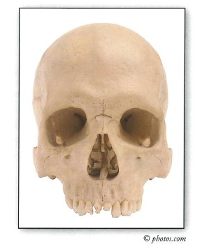

Inferring the Cause of Death from Skeletal Remains
After a violent death, such as a homicide, a suicide, or an accident, bones may display signs of traumatic injury because these manners of death often result in skeletal damage. When skeletal remains are found, the cause of death can be inferred by a forensic anthropologist only after the examination of the bones. Because only bones remain, details of the type of trauma the victim suffered are unknown. Therefore, a forensic anthropologist will state that the trauma is consistent with a certain type of injury that could lead to death. For example, if a stab wound to the torso is observed, the existence of this type of wound does not prove that stabbing was the cause of death. A forensic anthropologist will likely state that the cause of death is consistent with death by stabbing. An inference is made rather than a confirmation because the person could have died from other causes before or after he or she was stabbed.

"What lies deepest within all of us, at our center; that which is the last of us ever to be cut, burned, disassembled, or dissolved: that which is strongest, hardest, and least destructible about us; our firmest ally, our most trustworthy companion, our longest surviving remnant after we die: our skeleton."
- Dr. William Maples (Forensic Anthropologist)
Forensic Fact:
Killers are afraid of getting caught; thus, the longer it takes to dispose of a body, the greater the chance of being spotted. Even in the wilderness, murderers tend to dump their victims near a road.